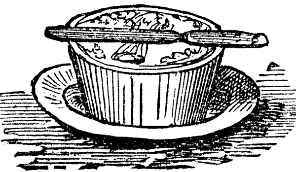
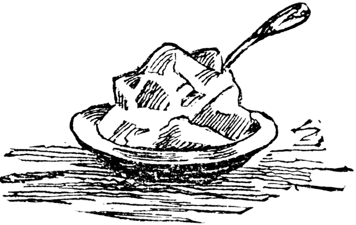
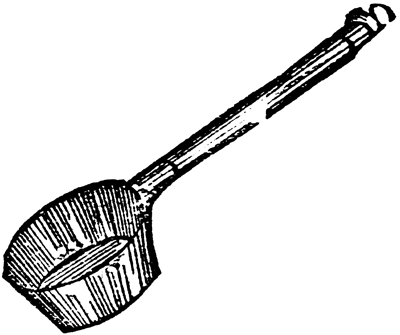

Recordad cuando niño recibía
cuartillo los domingos y contento
llevándolo a dos manos me salía
a gastarlo en la tienda como ciento
al entrar con la vista recorría
los platos y bandejas y tormento
me daba el no tener en ese instante
con qué poder comprar hasta el estante.
Las panuchas, merengues y cocadas,
las orejas de fraile y las obleas,
las yemas, caramelos y cuajadas,
alfeñiques, tomates y grajeas
recorría con rápidas miradas,
sin que fijar pudiera mis ideas
sobre cual de esos dulces me sería
más sabroso y más tiempo duraría.
Ángel Cuervo. La dulzada, 1867.
3 litros de leche
4 tazas de azúcar
½ cucharadita de bicarbonato
Una pizca de sal

Se calienta la leche en un recipiente amplio y a fuego bajo, se le agrega el azúcar y se deja disolver sin revolverlo. Se agregua el bicarbonato y la pizca de sal. Se revuelve hasta que dé punto, es decir hasta que pueda ver el fondo de la olla. Este procedimiento puede durar alrededor de unas tres horas.
(Si se quiere, puede agregársele al principio una raja de canela. Se saca antes de echar el bicarbonato).
Arroz con leche, me quiero casar
con una señorita de la capital
que sepa coser, que sepa bordar
que sepa abrir la puerta para ir a jugar.
Con ésta sí, con ésta no,
con esta señorita me caso yo.
Canción infantil latinoamericana
1 libra de arroz
3½ tazas de agua
6 tazas de leche
2 yemas de huevo (opcionales)
½ libra de azúcar
1 taza de uvas pasas
1 astilla de canela
Entre 4 y 6 clavos, según el gusto (opcionales)
Se lava bien el arroz y se pone a sancochar en el agua. Se deja cocer y secar como cualquier otro arroz. Se agrega la leche, el azúcar, la mantequilla, los clavos y la canela. Se deja hervir lentamente revolviendo. Se revuelven aparte las yemas con un poquito de arroz ya cocido y después se agrega al resto. Se pone en refractaria y se decora con uvas pasas.
(Lo ideal es preparar esta receta con leche entera y cruda, de ordeño. Si utiliza leche de bolsa, asegúrese que sea entera. En este caso, el chef Carlos Ordóñez aconseja mezclarle un poco de leche en polvo.)
Se toman dos botellas de leche endulzada al gusto y se le pone un pocillito de arroz de Castilla lavado. Se colocará al fuego hasta que ablande. Si tarda mucho en ablandar se le agrega más leche. Aparte se baten seis yemas de huevo. Se retira del fuego la leche con el arroz. Se le mezcla el batido de las yemas y unas rajitas de canela. Se vuelve a colocar al fuego por poco tiempo. Se retira del fuego, cuando esté un poco frío se le añade vino de madera o de Jerez y se echa en los platos.
Del recetario propiedad
de Germán Pardo Rojas.
Guayabita, muchachita
de l’orilla del camino:
igualitas en la suerte
mesmitas en el destino
Copla popular
Se toman guayabas maduras bien rosadas y frescas, pero si esto no es fácil, se echan en agua fría mientras se emplean. Se licúan y se ciernen; para cuatro tazas de cernido se añaden dos libras de azúcar y el jugo de medio limón. Se hace el almíbar y se le da punto de bola —que al echar un poco de él en agua, forme una bola—. En este punto y, cuando esté hirviendo a fuego vivo, se le echa la guayaba cernida. Debe continuarse con el fuego parejo sin interrupción y sin dejar de revolver con cuchara de palo.
El punto del bocadillo es cuando, si se saca en una cuchara y se ventea para refrescarlo pronto, al tocarlo con el dedo no unta. Entonces se extiende en una tabla o una bandeja, en una capa con el grueso que se quiera.
Al día siguiente se cortan. Si se quiere, se pueden espolvorear con azúcar.
Se toman las brevas y se raspan con un cuchillo o se frotan en una teja de barro para quitarles la pelusa. Se rajan en cruz sin que se desprendan los pedazos. Se pone suficiente agua a calentar y, cuando hierva, se le pone una cucharadita de bicarbonato y en seguida las brevas. Se cocinan hasta que estén blandas, se sacan y se escurren. El agua sobrante se bota.
Se prepara el almíbar a razón de una libra de azúcar (o una panela) y dos tazas de agua por cada docena de brevas. Se echan las brevas y se dejan conservar a fuego lento hasta que estén brillantes. Si espesa mucho el almíbar se puede agregar un poco de agua caliente.
…este segundo servicio es lo que en Francia llamaríamos el postre, pero se caracteriza siempre por la variedad de frutas y de dulces de todo género que se sirven, pues en cuanto a las frutas se pueden conseguir fácilmente en Bogotá todas las que se producen en los climas más variados; desde la zona más cálida hasta la fría, y en cuanto a los dulces, se traen de los conventos de monjas, donde se confeccionan con gran habilidad.
August LeMoyne, en el año de 1829.
Viajes y estancias en América del Sur,
La Nueva Granada, Santiago de Cuba,
Jamaica y el Itsmo de Panamá.
Bogotá: Biblioteca Popular
de Cultura Colombiana, 1954.
20 limones
1 litro (4 tazas) de agua
1½ libra de azúcar
Se parten los limones por la mitad y se saca la pulpa con una cucharita. Se frotan las cáscaras en teja de barro o una piedra áspera para quitarles un poco el amargo. Se ponen a cocinar con agua que los cubra hasta que queden tiernos. Se sacan, se escurren. Se ponen en una olla a fuego lento, con un litro de agua y el azúcar. Se retiran cuando ya alcancen el punto deseado.
5 almojábanas
½ panela
1 rajita de canela
4 tazas de agua
Se prepara un melao con el agua, la panela y la rajita de canela. Ahí se sumergen las almojábanas por cinco minutos. Se retiran y se sirven.
15 tazas de leche entera y cruda, de ordeño
¼ de pastilla de cuajo
2 cucharaditas de sal
1 panela
3 tazas de agua
1 rajita de canela
Se prepara la cuajada hirviendo la leche y agregándole el cuajo. Se revuelve despacio y se baja del fogón. Se deja reposar tapada y, cuando esté fría, se comienza a desaguar y se deja endurecer en un
colador.
Se prepara el melao mezclando el agua, la panela y la rajita de canela. Se deja hervir hasta que espese. Se deja reposar y se sirve en cada plato un trozo de cuajada y encima se le vierte melao al gusto.
—¡Cómo! ¿Te vas sin tomar dulce o un poco de aloja?
—Gracias, señor, no acostumbro…
—¿Que no acostumbras? luego ¿de qué tierra eres?
—Acabo de almorzar, señor, y por esto…
—¡Ah! …eres francés; con razón, tomarás a la seis de la tarde sopa de vidrio molido, arroz con ruibarbo, torta de agraz y los demás nutritivos alimentos que usan ustedes los extranjeros. Yo, como viejo santafereño, no estoy al corriente de las modas bogotanas…
Ricardo Silva (1836-1887),
Un domingo en casa y otros cuadros.
Biblioteca Aldeana de Colombia, 1936.
1 libra de moras
1 libra de azúcar
2 cucharadas de agua
Se lavan y se despezonan las moras, se les pone el azúcar y el agua, se deja hervir de 5 a 10 minutos, sacando la espuma que se forme. Se sirve con queso Paipa o una tajada de cuajada; a esta combinación la llaman «Matrimonio».
5 tazas de agua
2 tazas de azúcar
6 papayuelas peladas y cortadas en tiras anchas medianas
1 rajita de canela
Se pone en una olla a fuego medio el agua y el azúcar. Se cocina hasta que el azúcar se haya disuelto. Se agregan las papayuelas y la canela, y se cocina hasta que la papayuela esté tierna. Se sirve fría.
8 tomates de árbol
8 tazas de agua
1 libra de azúcar
Gotas de limón
Se pelan los tomates, dejándoles los tallitos. Se ponen a cocinar en 4 tazas de agua por 30 minutos hasta que se ablanden. Se agregan las otras 4 tazas de agua y el azúcar. Se dejan calar por 30 minutos más, a fuego lento y quitando la espuma. Se sirve frío.
Te baña el río Sutamarchán
Esparce al aire aromas de curuba
Y en los hogares hay fe y alegría
Buscando el futuro que brinda la tierra mía.
Himno de Sutamarchán, Boyacá.
14 curubas bien maduras
2 huevos
1 taza de azúcar
4 cucharadas de gelatina sin sabor disueltas en ¼ de taza de agua tibia
1 taza de crema de leche fresca
1 taza de leche
4 cucharadas de azúcar
Una pizca de sal
Vainilla al gusto
2 cucharadas de maicena
Se cortan las curubas y se pone la pulpa en un colador. Se presionan con una cuchara hasta obtener dos tazas de jugo concentrado. Se reservan aparte. En un tazón grande se baten las yemas de los huevos
con media taza de azúcar hasta obtener punto de cinta o turrón (cuando haga hilos). Aparte se baten las claras con cuatro cucharadas de azúcar hasta obtenerse punto de nieve, se agregan las yemas batidas y se mezcla muy bien. En otro recipiente se disuelve la gelatina sin sabor con media taza del jugo de curuba tibio. Se incorpora la crema de leche, el resto del jugo concentrado, media taza de azúcar y por último se vierte poco a poco esta mezcla en la de yemas y claras previamente preparada. Se dispone todo en un molde ligeramente engrasado o, si se prefiere, moldes individuales. Se lleva el molde tapado para el refrigerador hasta el día siguiente.
Se calienta, en una olla pequeña a fuego medio, la leche con el azúcar, la sal y la vainilla. Aparte, se disuelve la maicena en un poco de leche, se vierte la leche caliente y se revuelve con cuchara de palo hasta que espese. Se retira del fuego y se deja reposar tapado. Al servir, se echa un poco de esta salsa en el plato, luego una tajada o porción de esponjado y encima otro poco de salsa.
8 huevos
1 litro de leche entera
1 taza de azúcar: ½ para el flan y ½ para el caramelo
1 cucharadita de vainilla.
Ralladura de nuez moscada o de naranja o limón (opcional)
4 cucharadas de agua
Se precalienta el horno a 190°c (375°f). En un tazón grande se revuelven (no se baten) los huevos muy bien y se pasan por un colador.
Aparte, se tibia ligeramente la leche y se agrega a los huevos junto con ½ taza de azúcar, la vainilla y la ralladura de nuez moscada.

En una cacerola pequeña se prepara caramelo con el agua y la ½ taza de azúcar restante.
Se toma un molde y se baña con el caramelo. Después se vierte la mezcla para el flan. Debe rellenarse hasta el borde. Se hornea durante una hora, hasta que cuaje. Se refrigera y se desmolda al día siguiente.
8 claras
½ libra de azúcar
1 cucharadita de vainilla
8 yemas
6 tazas de leche
2 cucharaditas de vainilla
1 taza de azúcar
4 cucharaditas de maicena
2 conchitas de limón (opcional)
Se separan las claras y las yemas de los 8 huevos. Se pone la leche al fuego con la conchita de limón. Cuando hierva se le añade la maicena disuelta en un poquito de leche fría. Aparte se baten las yemas con la taza de azúcar hasta que endurezcan. Cuando ya la leche con maicena hierva de nuevo, se le va agregando a las yemas por cucharadas, moviendo hasta que enfríe para que no se forme nata. Cuando esté fría, se cuela y se le añade la vainilla. Se reserva esta crema inglesa para bañar las islas.
Se baten las claras a punto de nieve y se les va a agregando el azúcar lentamente. Cuando estén duras se les añade la vainilla. Se vierte en un molde con capacidad para seis tazas, tratando de cubrir el fondo primero y luego los lados para que al desmoldarlo no quede con huecos. Se mete al horno en baño de María, con temperatura de 350°f por una hora aproximadamente, o hasta que cuaje. Cuando esté frío se desmolda y se baña con la crema inglesa.
Colombia ocupa el tercer lugar en Latinoamérica en producción de leche fresca, después de Brasil y Argentina, y Cundinamarca es el departamento con la mayor producción, seguido de Antioquia y Boyacá. Esto explicaría por qué la leche y sus productos derivados son ingredientes en diversos platillos de la gastronomía de la Sabana. Uno de los mayores atractivos de los municipios de Sopó y Ubaté, por ejemplo, es la degustación de quesos, yogures y otros lácteos.
4 huevos
1/3 taza de azúcar
Una pizca de sal
2½ tazas de leche
Se baten los huevos y se les pone el azúcar, la pizca de sal y la leche. Se echa en tacitas refractarias engrasadas con mantequilla derretida. Se colocan en una lata con agua caliente y se meten al horno moderado. Cuando se le hunda un cuchillo y salga limpio, ya están listas. Se sirven frías.
10 claras de huevo
½ taza de azúcar
Una pizca de crémor tártaro
Unas gotas de vinagre
½ cucharadita de vainilla (o esencia de anís)
½ cucharadita de brandy o cualquier licor (opcional)
Se baten las claras a punto de nieve, se le agregan las gotas de vinagre, el crémor y poco a poco el azúcar. Cuando las claras estén firmes, se le añade la vainilla (o el anís). Se sacan cucharaditas y se ponen sobre una lata engrasada. Se llevan el horno precalentado a 150°f por 2 horas. Se apaga el horno y se dejan dentro hasta que el horno se enfríe completamente. Los merengues, más que cocerse, se secan en el horno. Cualquier cambio brusco de temperatura (por ejemplo, al abrir la puerta antes de tiempo) hace que se cuarteen.
Se lava mucho la guanábana y se les separa las pepas; se escurre mucho. Para una libra de guanábana, tres de azúcar. Se hace almíbar y cuando esté de punto de hoja se le agrega la guanábana; se menea hasta que despegue de la paila. Se baten tres claras de huevo, se baja la paila; se bate hasta que esté blanco y melcochudo; se le pone el huevo batido y se vuelve a poner al juego un poquito mientras se mezcla todo; se baja y se echa en el molde untado de mantequilla.
Del recetario familiar
de Germán Pardo Rojas.
Se lava cuidadosamente la guanábana y se separan las pepas, dejándola bien escurrida. Para una libra de guanábana, tres libras de azúcar. Se prepara un almíbar y cuando esté de punto de hoja se le agrega la guanábana; se revuelve hasta que despegue de la paila. Se baten tres claras de huevo y se incorporan a la mezcla fuera del fuego. Se bate hasta que esté blanco y hecho melcocha, y se le incorpora el huevo batido. Se vuelve a poner al fuego mientras se mezcla todo. Se retira del fuego y se pone en un recipiente.
2 libras de papa
1 libra de azúcar
3 tazas de agua
¼ de taza de jugo de alguna fruta
1 astilla de canela
Se prepara el almíbar con el agua, el azúcar y la canela. Cuando esté a punto, se muele finamente la papa, se agrega el jugo de frutas. Se mezcla bien y se añade el almíbar. Se deja cocer a fuego lento revolviendo constantemente, hasta que se logre ver el fondo de la paila, lo cual indica que ya está lista.
La uchuva es originaria de Perú y llegó a las tierras del altiplano desde tiempos de los muiscas. Se cultiva ampliamente en Colombia y se usa en la cocina tanto para platos de dulce como de sal.
2 libras de uchuva
¼ de libra de azúcar morena
¼ de libra de panela raspada
1 clavo de olor
½ cucharadita de nuez moscada
1 rajita de canela
El jugo de 1 limón
Se limpia y se lava muy bien la fruta. Se le agregan dos tazas de agua y se deja hervir. Se le añade el azúcar y la panela raspada, el jugo del limón y las especias. Se deja hervir hasta que dé punto, es decir, que se vea el fondo de la paila y quede de color cristalizado. Se guarda en frascos de vidrio. Se conservan adecuadamente en la nevera. Puede usarse de base para las salsas que acompañan al cordero y el pernil de cerdo.
Virgen de la Candelaria,
La patrona de la Villa,
Se acabó la nochebuena
Y no probé la natilla.
Copla popular
2 litros de leche
1 libra de panela raspada
4 astillas de canela
2 tazas de maicena
2 cucharadas de mantequilla
Se pone a hervir 1½ litro de leche con la panela, sacándole la espuma que se va formando. Se añade la mantequilla, la maicena disuelta en el ½ litro de leche que faltaba y la canela. Se revuelve y se cocina a fuego lento durante 10 minutos o hasta que este en su punto (cuando se echa un poco en un plato y es fácil despegarlo). Se puede espolvorear con canela molida al momento de servir.
2½ libras de panela
6 tazas de leche
1 pocillo de arroz
1 astilla de canela
½ cucharadita de clavo en polvo
Corteza de limón rallada
Se remoja el arroz en media taza de agua y se muele. Después se disuelve en una taza de leche y se cuela. Se pone la leche al fuego junto con la panela partida en pedazos, se le agrega la leche con el jugo del arroz. Se sigue cocinando sin dejar de revolver con una cuchara de madera. Se deja espesar hasta que, al revolver, pueda verse el fondo de la paila. Se baja del fuego, se le echa la canela, el clavo en polvo y la ralladura de limón. Se sigue batiendo hasta que enfríe. Se extiende sobre una tabla o bandeja, se espera hasta que se sequen y se endurezcan. Se parten las panelitas.
|
 |